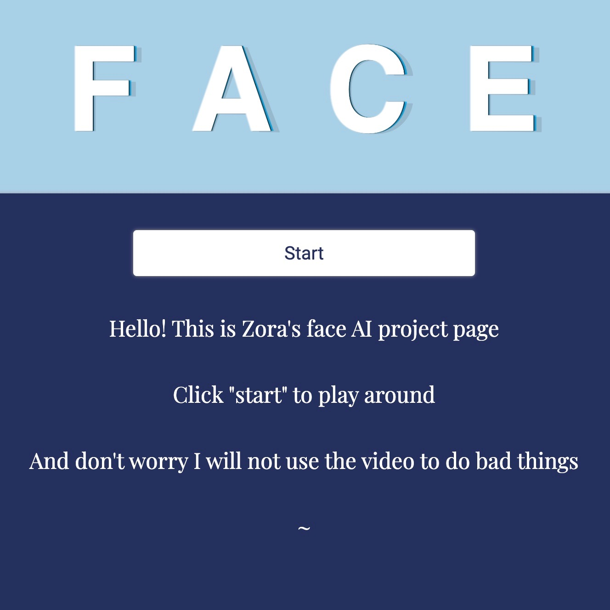
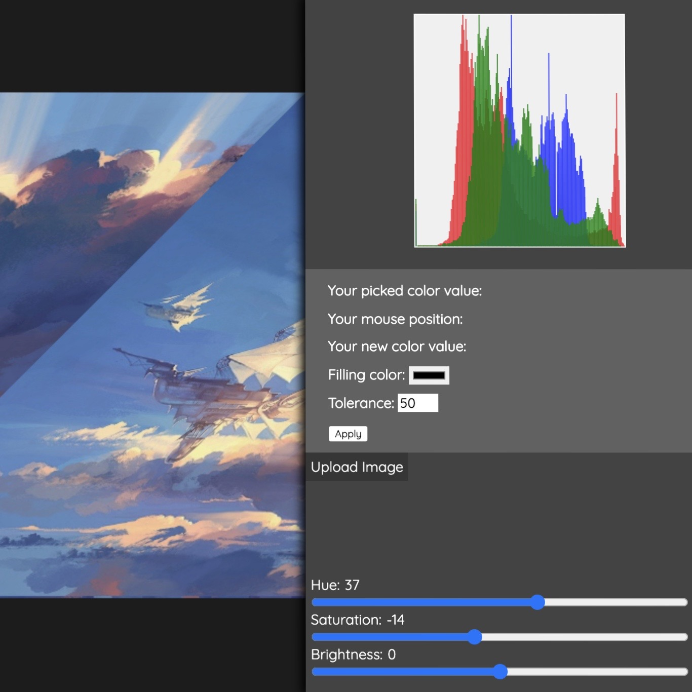
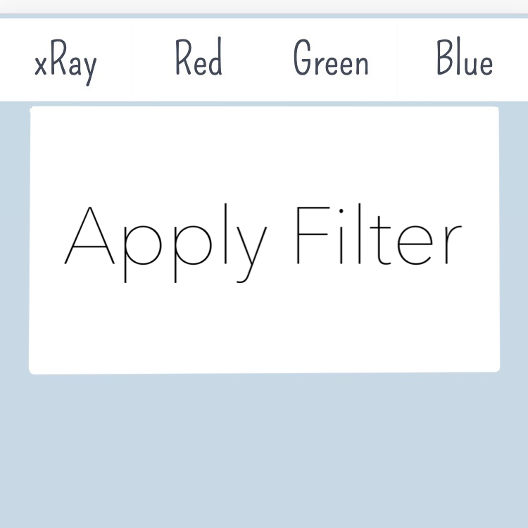

Zz Web Space
This is where Zora stacks her web-based mini coding projects.
Minimax Algorithm Tic Tac Toe
General: Play tic tac toe with a smart or not-smart computer
Learning: Minimax algorithm
COVID-19 Spread Simulator
General: The simulator uses an exponential growth model to produce a line graph
Learning: Manipulating canvas element to draw line graph, controling variables in javascript

Face Recognition Project
General: Utilizes AI model to tell your age, expression, and gender based on your photo
Learning: Convolutional neural networks, canvas element as a camera, getting data from photos

Image Processor
General: functions include - flood fill, color histogram, HSV adjustment
Learning: floodfill algorithms, dealing with pixels in photos

Filter Applet
General: Apply color filters to your camera
Learning: Manipulating pixels on canvas camera